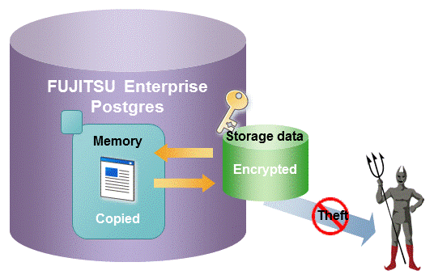

The encryption of data to be stored in a database is essential under the following encryption requirements of PCI DSS (Payment Card Industry Data Security Standard), the data security standard of the credit industry:
Confidential information (such as credit card numbers) can be encrypted.
The encryption key and data are managed as separate entities.
The encryption key is replaced at regular intervals.
To satisfy these requirements, FUJITSU Enterprise Postgres provides a transparent data encryption feature. Note that PostgreSQL uses an encryption feature called pgcrypto, which can also be used in FUJITSU Enterprise Postgres, but requires applications to be modified. Therefore, we recommend using FUJITSU Enterprise Postgres's transparent data encryption feature.

See
Refer to "Protecting Storage Data Using Transparent Data Encryption" in the Operation Guide for information on stored data encryption.